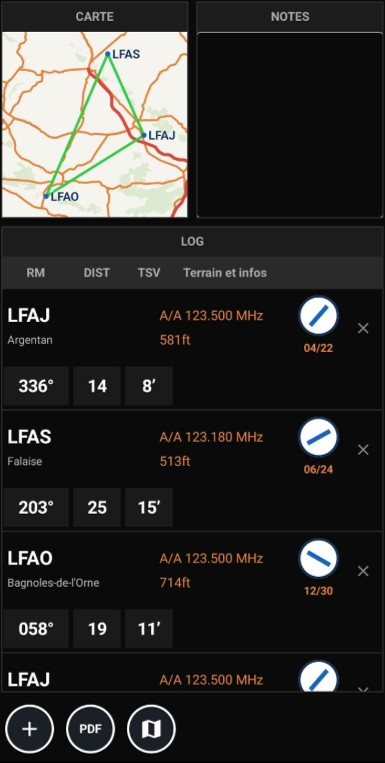

Possibilités
- Préparation d'une route par liste de terrains : carte, blocs terrain (ICAO, nom, fréquence, altitude, piste) et log.
- Log par branche : RM (route magnétique), DIST (nm), TSV (temps estimé, min).
- Branches calculées entre terrains consécutifs selon la vitesse de croisière de l'appareil (arc vert / VNO ; défaut 90 kt).
- Export PDF du dossier (capture la carte + METAR/TAF autour de la route).
Commandes
- + : ajouter un terrain (recherche par ICAO ou nom).
- PDF : exporter le dossier de navigation.
- Carte : ouvrir la carte plein écran.
Note
- Terrains issus de vos cartes VAC + annuaire OpenAIP (France).
- Le plan (liste de terrains + notes) est mémorisé dans les préférences.
CMNNAV
